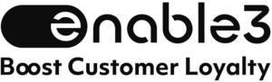

Trade Mark Journal No.2025/015 11 April 2025
WO0000001834603 (9,35,42)
Office of origin: European Union Intellectual Property Office (EUIPO)
Date of International Registration:25 October 2024
Date of designation in the UK:
25 October 2024

International priority date claimed: 24 October 2024
(European Union Intellectual Property Office (EUIPO))
(019095863)
- Class 9
- Downloadable application software for virtual environments for use in connection with customer loyalty programs; downloadable computer software applications for minting non-fungible tokens (NFTs) for use in connection with customer loyalty programs; computer software applications, downloadable, for use in connection with customer loyalty programs; downloadable computer software for managing crypto asset transactions using blockchain technology for use in connection with customer loyalty programs; downloadable cryptographic keys for receiving and spending crypto assets; computer hardware for use in connection with customer loyalty programs; computer software, recorded; computer game software, downloadable, for use in connection with customer loyalty programs; computer game software, recorded, for use in connection with customer loyalty programs; computer programs, downloadable; computer programs, recorded; computer operating programs, recorded; computer software platforms, recorded or downloadable for use in connection with customer loyalty programs; downloadable digital music files authenticated by non-fungible tokens (NFTs); downloadable digital image files authenticated by non-fungible tokens (NFTs).
- Class 35
- Administration of consumer loyalty programs; business inquiries related to the creation and administration of customer loyalty programs; providing business information via a website; compilation of information into computer databases; compilation of statistics; computerized file management related to the creation and administration of customer loyalty programs; marketing; marketing in the framework of software publishing; marketing research; provision of an online marketplace for buyers and sellers of goods and services; updating and maintenance of data in computer databases in connection with customer loyalty programs; business consultancy services for digital transformation in connection with customer loyalty programs; online advertising on a computer network; systemization of information into computer databases; sales promotion for others; promotion of goods and services through sponsorship of sports events; marketing through product placement for others in virtual environments; provision of an online marketplace for buyers and sellers of downloadable digital image files authenticated by non-fungible tokens (NFTs).
- Class 42
- Off-site data backup; research in the field of artificial intelligence technology; providing virtual computer systems through cloud computing; installation of computer software for use in connection with customer loyalty programs; computer programming; computer technology consultancy; computer software consultancy; monitoring of computer systems to detect breakdowns; monitoring of computer system operation by remote access; writing of computer code; platform as a service (PaaS); user authentication services using blockchain technology; user authentication services using single sign-on technology for online software applications; computer programming services for data processing; information technology (IT) support services (troubleshooting of software); software engineering services for data processing; software as a service (SaaS); computer software design; development of computer platforms; software development in the framework of software publishing; blockchain as a service (BaaS); providing online non-downloadable computer software; providing online non-downloadable computer software for minting non-fungible tokens (NFTs); computer programming of smart contracts on a blockchain; updating of computer software.
NABL APPS LIMITED
Representative: METIDA, Business center VERTAS,, Gyneju str. 16, LT-01109 Vilnius, LITHUANIA